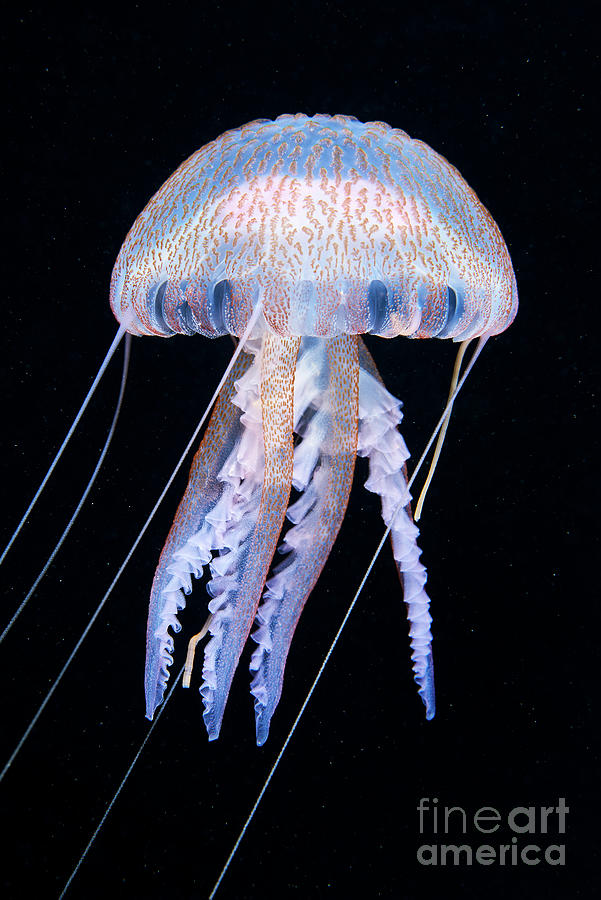
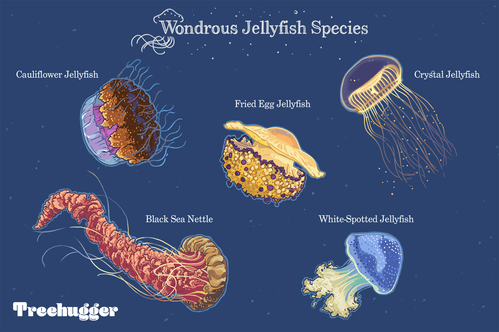
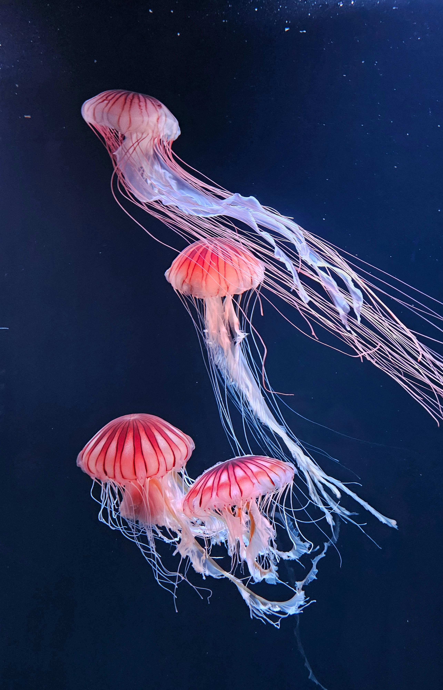
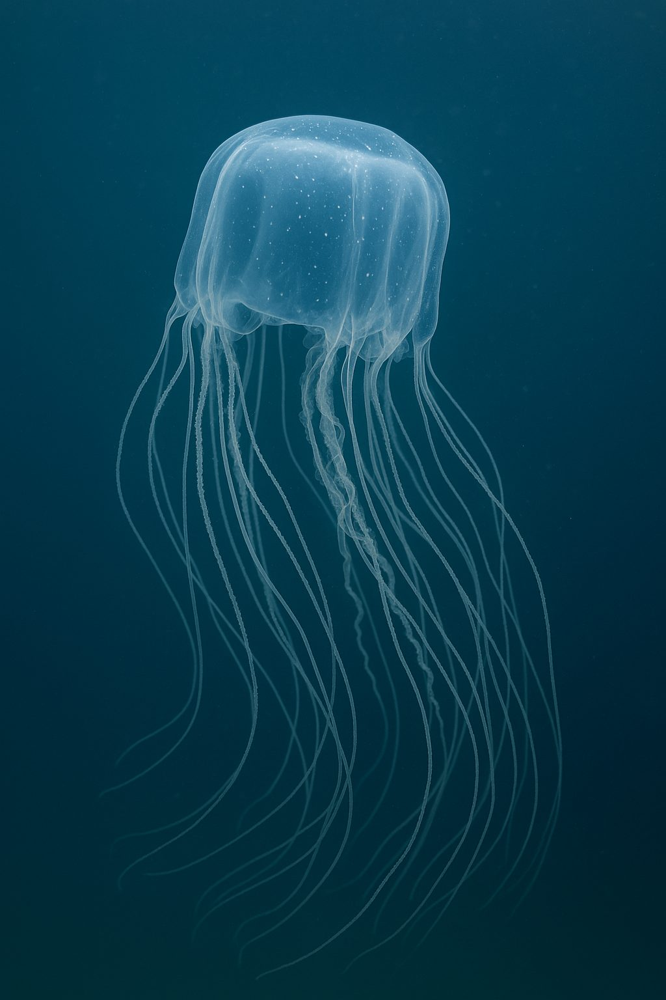
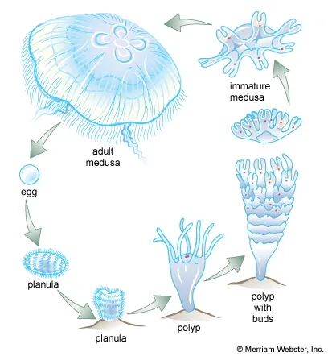

General Information
Jellyfish are magnificent creatures that live in the oceans of our world. They can be found in all sorts of places in the ocean such as deep or shallow waters, cold or warm areas and appear in a variety of different colors. Certain jellyfish, such as the Mauve Stinger, in the deep are bioluminescent, meaning they can produce their very own light!

Interesting Facts about Jellyfish
- Jellyfish have no brain, heart, eyes or bones!
- They are about 95% water
- There is no blood in their bodies
- An elementary nervous system helps the jellyfish smell, detect light waves and have reactions to other things in their environment.

- Jellyfish could be older than prehistoric dinosaurs!
- Jellyfish have no bones so fossils are rare
- They could've been around 700 million years ago
- Some of the earliest jellyfish fossils, the comb jellies, were found in Utah!

- Their mouths are in the center of their body.
- They sting their prey through their tentacles and eat things such as zooplankton, small fish and fish eggs.
- They have only one way to eat and get rid of waste.

- They are one of Earth's most dangerous animals!
- The box jellyfish has the deadliest sting.
- Their stings can cause paralysis, cardiac arrest, heart failure and death.
- The box jellyfish can be found mostly in Australia and the Indo-Pacific region.

- Jellyfish reproductive system includes both asexual and sexual characteristics
- Swimming adults mix their dna through sexual reproduction increasing genetic diversity.
- Once the little larva finds a place on the ocean floor, they can produce thousands of identical jellyfish.
